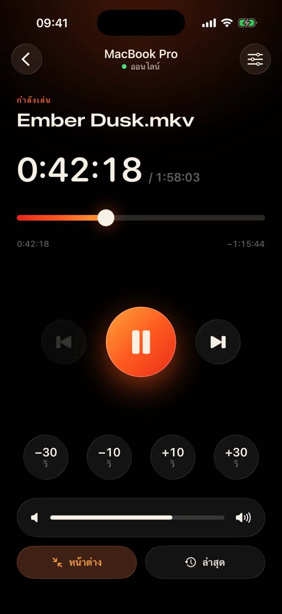
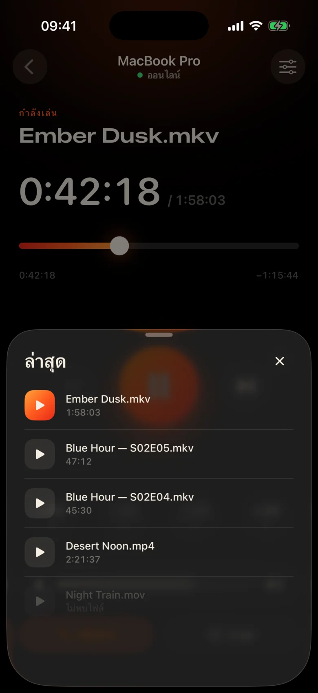
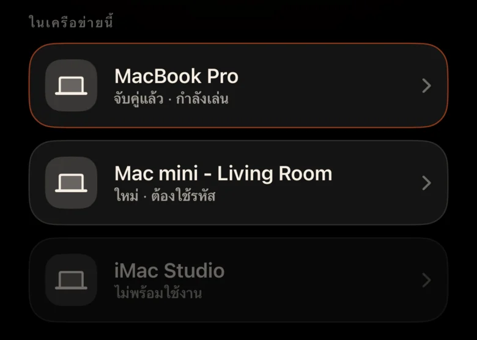
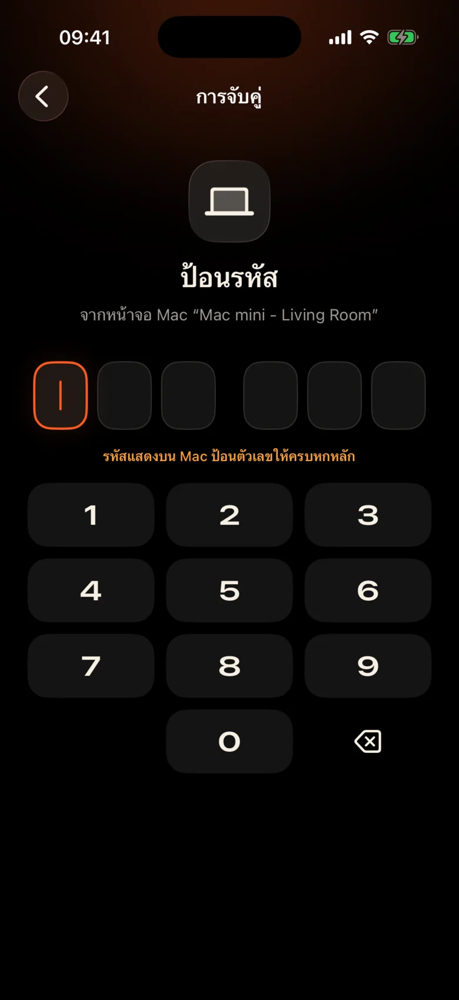

Mac อยู่ฝั่งตรงข้ามห้อง
มันเสียบเข้ากับโปรเจ็กเตอร์ที่ผนัง การหยุดชั่วคราวทุกครั้งหมายถึงการลุกขึ้น ค้นหาแทร็คแพดในความมืด และเหล่ไปที่แถบควบคุมเล็กๆ
Kinrox: แตะหยุดชั่วคราวบนโทรศัพท์ในมือของคุณ
Kinrox เล่นวิดีโอใดๆ บน Mac ของคุณ — และเปลี่ยน iPhone ของคุณให้เป็นรีโมท MacBook บนโปรเจ็กเตอร์ คุณบนโซฟา: หยุดชั่วคราว ย้อนกลับ 10 วินาที ลดระดับเสียง หรือเริ่มตอนถัดไปโดยไม่ต้องลุกออกจากผ้าห่ม


มันเสียบเข้ากับโปรเจ็กเตอร์ที่ผนัง การหยุดชั่วคราวทุกครั้งหมายถึงการลุกขึ้น ค้นหาแทร็คแพดในความมืด และเหล่ไปที่แถบควบคุมเล็กๆ
Kinrox: แตะหยุดชั่วคราวบนโทรศัพท์ในมือของคุณ
เสียงกระซิบในฉากหนึ่ง การระเบิดในฉากถัดไป และมีคนหลับไปแล้วในห้องถัดไป
Kinrox: แถบเลื่อนระดับเสียงใต้นิ้วหัวแม่มือของคุณ
แผงเว็บที่มีที่อยู่ IP และรหัสผ่าน แท็บเบราว์เซอร์ที่หลับ ปุ่มที่ทำขึ้นสำหรับโต๊ะ ไม่ใช่สำหรับโซฟา
Kinrox: ค้นหา Mac ของคุณด้วยตัวเอง จับคู่กับรหัสเดียว

เป้าหมายใหญ่ ธีมอบอุ่นสีเข้ม และการสัมผัสเบาๆ ทุกครั้งที่กด คุณสามารถใช้มันได้โดยไม่ต้องละสายตาจากฟิล์ม
ทุกปุ่มใหญ่พอให้กดได้ง่ายแม้ตอนง่วง
พลาดสายเหรอ? แตะครั้งเดียวกลับ ข้ามคำนำด้วยสอง
ระดับเสียงของ Kinrox ตั้งแต่ 0 ถึง 100 ระดับเสียงของระบบของ Mac ยังคงเหมือนเดิม
ไฟล์ก่อนหน้าและถัดไปจากโฟลเดอร์เดียวกัน ตามลำดับ Finder
เลือกสิ่งที่คุณเคยดูมาก่อน — โดยจะเปิดบน Mac
ลากไทม์ไลน์ไปยังช่วงเวลาใดก็ได้ สลับโหมดเต็มหน้าจอจากโซฟา
ไม่มีที่อยู่ IP ไม่มีรหัสผ่าน ไม่มีบัญชี หลังจากโค้ดแรก iPhone ของคุณจะเชื่อมต่อใหม่ด้วยตัวเอง
ลากไฟล์ไปที่ Kinrox หรือกด ⌘ O เซิร์ฟเวอร์ระยะไกลเปิดอยู่ตามค่าเริ่มต้น
Kinrox จะแสดงขึ้นมาเองเมื่ออุปกรณ์ทั้งสองใช้ Wi-Fi เดียวกัน

Mac แสดงรหัสที่มีอายุสองนาที ลองผิดสามครั้งแล้วก็หายไป


Alex’s iPhone ต้องการควบคุม Kinrox ป้อนรหัสนี้บนโทรศัพท์
 รหัสจะหมดอายุใน 1:47
รหัสจะหมดอายุใน 1:47
วิดีโอเป็นส่วนต่อประสาน ชั้นกระจกบางๆ จะปรากฏขึ้นเมื่อคุณต้องการ และซ่อนไว้หลังจากผ่านไปสามวินาที

สร้างขึ้นบน libmpv ซึ่งเป็นเครื่องยนต์เบื้องหลัง mpv และ IINA เลือกเสียงและคำบรรยายแบบฝังหรือภายนอก VideoToolbox จัดการการถอดรหัสฮาร์ดแวร์
Kinrox จัดเรียงวิดีโอในโฟลเดอร์และเริ่มวิดีโอถัดไปเมื่อตอนจบลง — “2” ก่อน “10” เช่น Finder
แป้นพิมพ์ ⏯ ปุ่ม ศูนย์ควบคุม และการควบคุมกำลังเล่น Kinrox ไฟล์ล่าสุดสูงสุด 20 ไฟล์รออยู่ที่หน้าจอเริ่มต้น
Mac และ iPhone ของคุณแลกเปลี่ยนคำสั่งการเล่นผ่านเครือข่ายท้องถิ่นของคุณโดยตรง วิดีโอของคุณยังคงอยู่ใน Mac
ค้นพบผ่าน Bonjour การเชื่อมต่อจากซับเน็ตของคุณเองเท่านั้น ที่อยู่สาธารณะและโทรศัพท์มือถือถูกปฏิเสธ
ทุกคำสั่งเดินทางในช่องสัญญาณที่เข้ารหัส โทเค็นการจับคู่อยู่ในพวงกุญแจบนอุปกรณ์ทั้งสองเครื่อง
X25519HKDF-SHA256ChaCha20-Poly1305ไม่มีบัญชีหรือการวิเคราะห์การใช้งาน Mac ตรวจสอบฟีดอัปเดตสาธารณะทุกวันโดยไม่มีตัวระบุเฉพาะหรือโปรไฟล์ระบบ เว็บไซต์นี้ไม่มีการวิเคราะห์หรือคุกกี้
รีโมตจะมองเห็นชื่อเรื่องและระยะเวลา โดยไม่ดูเส้นทางของไฟล์ การเปิดไฟล์ล่าสุดได้รับการแก้ไขบน Mac
Kinrox เขียนด้วย Swift 6 และ SwiftUI ด้านบนของ libmpv ทุกบรรทัดของเครื่องเล่น รีโมท และโปรโตคอลอยู่บน GitHub
สร้างจากแหล่งที่มา# Xcode 26.5, XcodeGen and mpv from Homebrew
brew install xcodegen mpv pkg-config
git clone https://github.com/awaik/Kinrox.git
cd Kinrox
cp -n Config/Signing.local.xcconfig.example \
Config/Signing.local.xcconfig
# Set your team: docs/runbooks/RUNBOOK-BUILD-AND-SIGNING.md
./Scripts/check-env.sh
./Scripts/generate.sh
xcodebuild -workspace Kinrox.xcworkspace \
-scheme PlayerMac -configuration Debug \
-destination 'platform=macOS,arch=arm64' \
-derivedDataPath DerivedData build
open DerivedData/Build/Products/Debug/Kinrox.appการเล่นและการควบคุมระยะไกลทำงานได้โดยไม่ต้องเชื่อมต่ออินเทอร์เน็ต เมื่อ Mac และ iPhone แชร์เครือข่าย Wi-Fi Mac ใช้ HTTPS เพื่อตรวจสอบการอัปเดตรายวันและดาวน์โหลดการอัปเดตเมื่อคุณเลือกติดตั้ง
ใช่ Kinrox เล่นได้กับสิ่งที่ Mac ของคุณแสดง ไม่ว่าจะเป็นโปรเจ็กเตอร์ ทีวีผ่าน HDMI หรือจอแสดงผลที่เชื่อมต่อกับ AirPlay
Macs ที่มี Apple silicon บน macOS 14 Sonoma หรือใหม่กว่า และ iPhones บน iOS 17 หรือใหม่กว่า ยังไม่รองรับ Intel Macs
ใช่ iPhone แต่ละตัวจะจับคู่กับรหัสของตัวเองหนึ่งครั้ง สามารถเชื่อมต่อรีโมทได้สูงสุดสี่ตัวในเวลาเดียวกัน คุณสามารถเพิกถอนสิ่งใดสิ่งหนึ่งได้ในการตั้งค่าเครื่องเล่น
ใช่ บน Mac ให้ใช้ปุ่มเสียงและคำบรรยายหรือเมนูเสียงและคำบรรยาย เลือกแทร็กที่ฝัง ค้นหาไฟล์ภายนอกในโฟลเดอร์ที่ซ้อนกัน หรือปิดคำบรรยาย Kinrox สามารถจดจำตัวเลือกของคุณสำหรับตอนต่อไปได้
ไม่มีอะไร Kinrox เป็นซอฟต์แวร์โอเพ่นซอร์สฟรีภายใต้ GNU GPL v3
Kinrox สำหรับ Mac และ iPhone ฟรี โอเพ่นซอร์ส และสร้างขึ้นเพื่อการชมภาพยนตร์ยามค่ำคืน